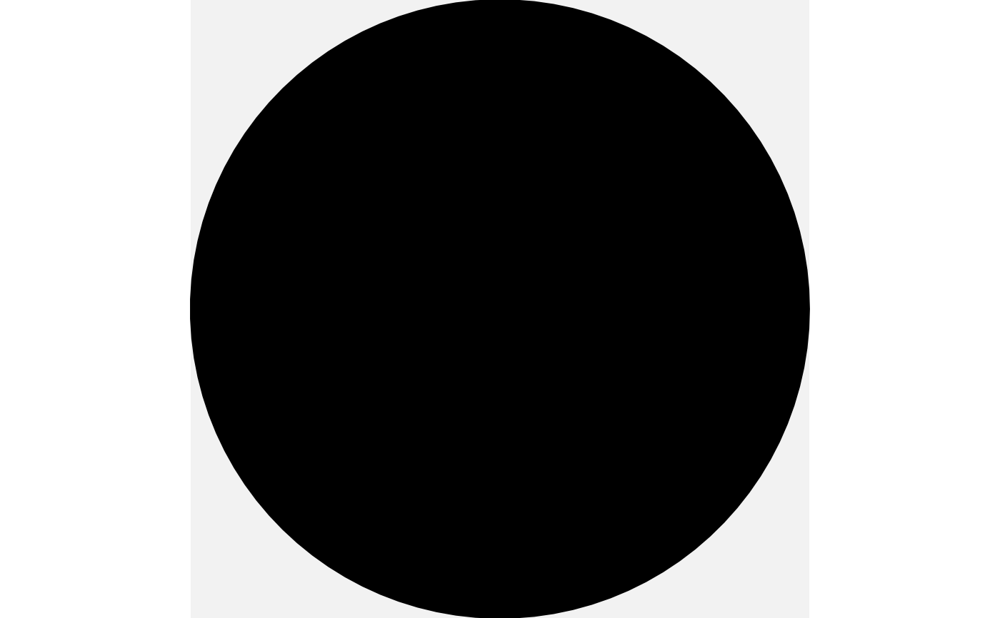

sketch is a list of drawable objects that can be rendered together
with a single call to draw(). Sketches can be built up incrementally
using the + operator, e.g.
sketch() + shape_circle() + shape_circle(x = 2).
Details
A sketch also supports list-like access to its shapes: length(s)
counts them, s[[i]] returns the single drawable at position i,
and s[i] returns a new sketch containing only the selected shapes
(its canvas is preserved) – mirroring how [[/[ differ on a
plain list.
Examples
s <- sketch() + shape_circle(radius = 1) + shape_circle(x = 2, radius = 0.5)
draw(s)
s2 <- sketch(canvas = canvas(background = "grey95")) +
shape_circle(radius = 1)
draw(s2)

length(s)
#> [1] 2
s[[1]]
#> <shape_circle>
#> x = 0, y = 0, radius = 1, n = 100
#> style: color = black, fill = black, linewidth = 1
#> geometry: polygon, trans: identity
s[1]
#> <sketch: 1 shape>
#> 1: shape_circle
#> canvas: background = NA, clip = FALSE
# a trans applied to a sketch composes onto every shape's own @trans
draw(s + trans_rotate(pi / 6))
# accumulate many shapes in a loop, e.g. a ring of circles
ring <- sketch()
for (angle in seq(0, 2 * pi, length.out = 9)[-9]) {
ring <- ring + shape_circle(x = cos(angle), y = sin(angle), radius = 0.3)
}
draw(ring)